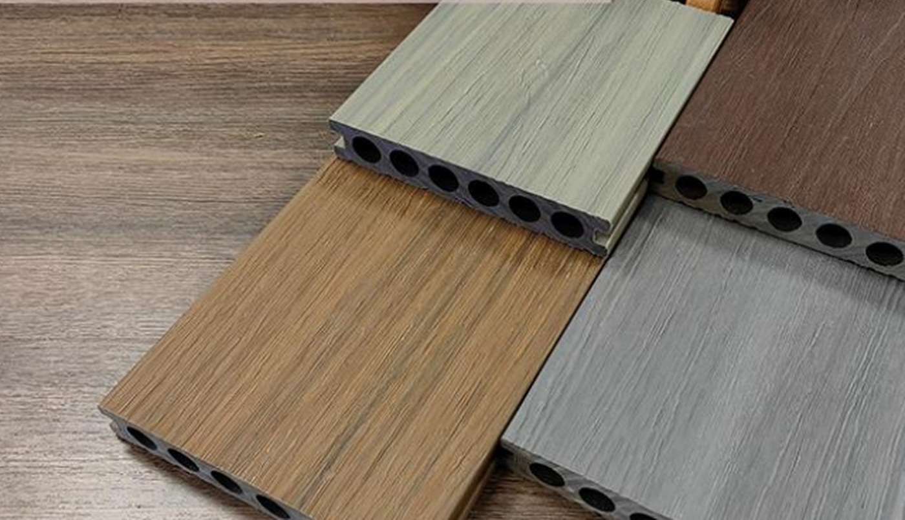
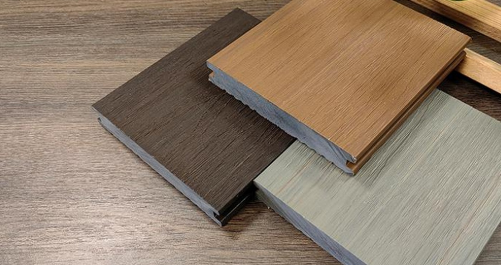
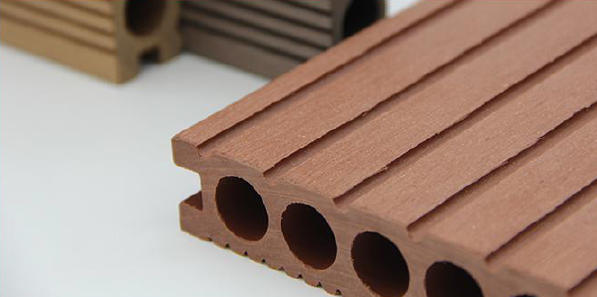
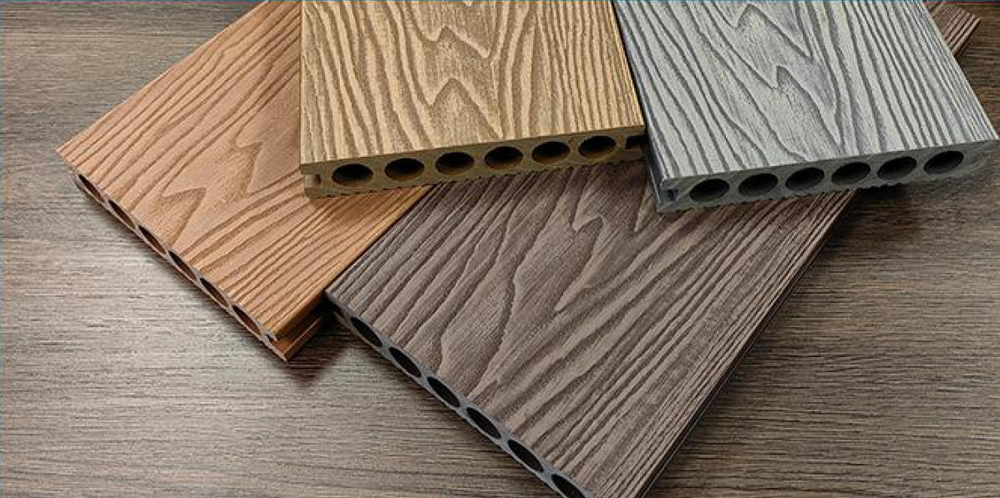
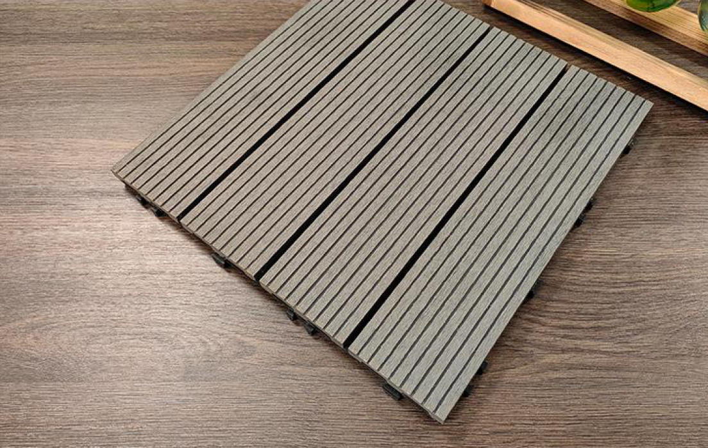
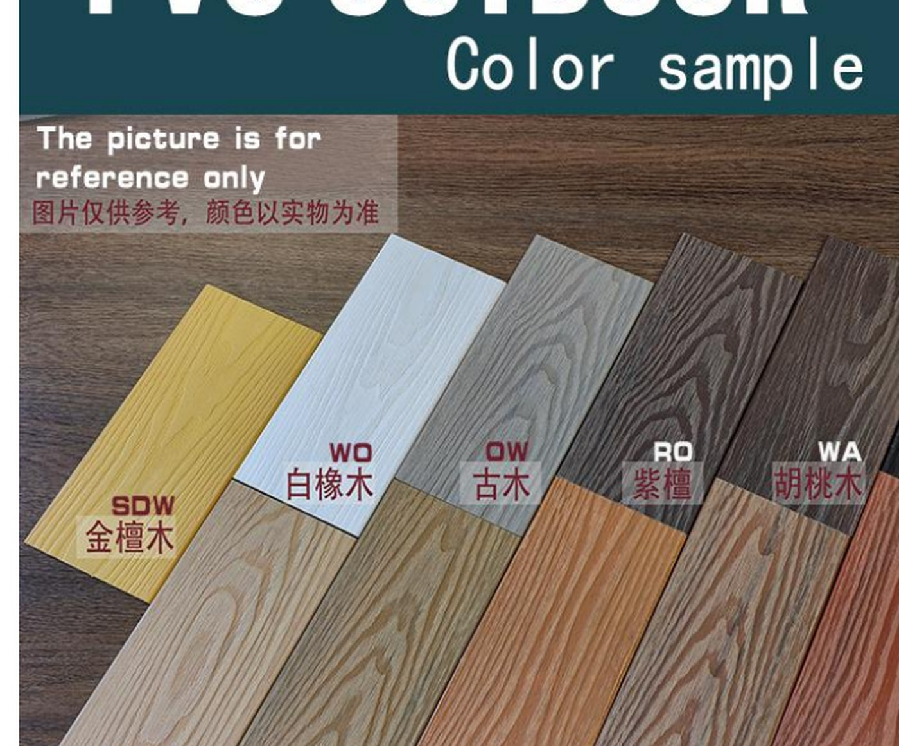
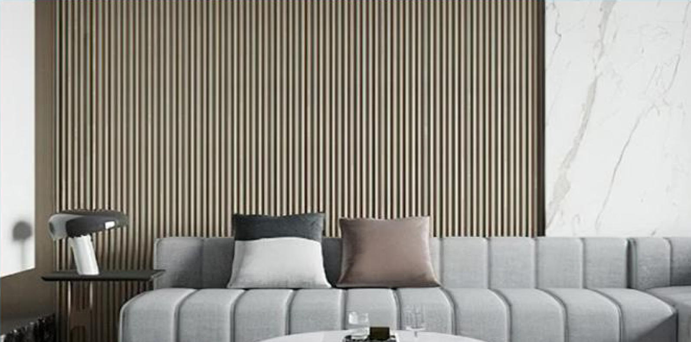

COMPOSITE BUILDING MATERIALS
Composite decking, wall panels, fencing and outdoor profile solutions for residential and commercial projects.
Request a QuoteWPC PRODUCT RANGE
Canaton supplies a broad range of WPC and related composite products for outdoor and interior building applications.
Our current product range includes second-generation co-extruded WPC decking, traditional WPC decking, PVC / ASA co-extrusion outdoor products, PVC laminated interior wall panels, WPC fencing and outdoor structural profiles.
01 / FEATURED SERIES
Our second-generation WPC decking uses a co-extruded surface layer to provide enhanced protection while maintaining a natural wood-grain appearance.
Available in multiple colours, hollow and solid profiles, and a range of surface finishes for residential and commercial outdoor projects.


Protective outer layer designed for outdoor applications.
Hollow and solid decking options for different project needs.
Natural-looking surfaces in a range of contemporary colours.
Suitable for decks, patios, terraces and commercial outdoor spaces.
02 / WPC DECKING
A versatile range of traditional wood-plastic composite decking for residential, commercial and landscape applications.
Multiple profile structures and surface treatments are available to support different design, installation and project requirements.



Classic hollow WPC profile for outdoor decking applications.
Hollow profile option for different structural and installation needs.
Deep woodgrain texture for a more natural timber appearance.
Solid composite boards for heavier-duty outdoor applications.
Modular WPC flooring for balconies, patios and renovation projects.
03 / OUTDOOR SYSTEMS
A range of exterior PVC profiles with an ASA co-extruded surface, developed for outdoor architectural applications and modern building finishes.
Available in multiple wood-inspired colours and profile formats for exterior walls, façades, slatted features and custom architectural applications.

COLOURS & FINISHES
Multiple colour and woodgrain options provide flexibility for residential and commercial exterior design.
Profile selection can be matched to different façade, cladding and architectural requirements.
Exterior profiles for façade and wall cladding applications.
Versatile flat profiles for exterior finishing and custom details.
Linear profiles for modern architectural and decorative façades.
Additional shapes for project-specific exterior applications.
04 / INTERIOR WALL SYSTEMS
Decorative PVC wall panels combining lightweight construction with a wide range of surface finishes for modern interior spaces.
Suitable for residential, hospitality, retail and commercial interiors where fast installation and consistent decorative finishes are required.

Linear decorative profiles for contemporary feature walls.
Interior wall finishes available in multiple colours and textures.
Design-focused wall solutions for residential and commercial interiors.
Selected profiles can also support decorative ceiling applications.
WHY WPC DECKING
Designed for demanding outdoor environments and changing weather conditions.
Provides a wood-inspired appearance without the maintenance requirements of traditional timber.
Available in a range of colours, textures and wood-grain surface options.
Suitable for decks, patios, balconies, landscaping and commercial outdoor spaces.
PRODUCT OPTIONS
APPLICATIONS
PROJECT INQUIRY
Tell us your required profile, colour, quantity and project location.
Request a Quote